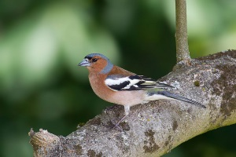

Le pinson
C'est aussi l'un des plus communs de nos oiseaux de jardin. De la taille d'un moineau, il est facilement reconnaissable à la double barre alaire blanche et aux rectrices externes blanches de la queue, surtout visible en vol. C'est
un oiseau particulièrement coloré, le mâle se distingue par le haut de la tête et la nuque bleu cendré, le dessous orange-rosé et les bandes alaires blanches et le croupion verdâtre.
La femelle du pinson ressemble énormément à la femelle du moineau domestique, mais peut être différenciée par sa bande alaire blanche et son bec conique et tranchant. Comme pour le mâle, on voit son croupion verdâtre en vol.
Comportement
Arboricoles, ils fréquentent les arbres et les haies dans les jardins. Ils forment des bandes en hiver pour se nourrir dans les champs dénudés. Ils utilisent les mangeoires lorsqu'elles ne sont pas squattées par les moineaux domestiques.
Le mâle établit un territoire autour d'un grand arbre où il établit son poste de chant. En hiver, le pinson des arbres passe des zones boisées où il s'est reproduit vers les zones agricoles, se déplaçant souvent en compagnie de moineaux,
de bruants et d'autres variétés de pinsons.
Même sur les aires de nourrissage propices, ces oiseaux n'apparaissent qu'en nombre restreint; ce sont surtout des mâles sur leur territoire de reproduction. Ils sont assez farouches, craignant non seulement les humains mais aussi la plupart des autres
oiseaux. Ils se nourrissent plus au sol que les autres fringilles et on les voit souvent chercher de la nourriture par terre, sous la mangeoire; ils trottinent avec des mouvements saccadés de la tête et picorent les graines que les
autres oiseaux ont laissé tomber de la mangeoire. On les voit souvent associés avec les pinsons du nord. Les pinsons des arbres préfèrent souvent se tenir en bordure d'un groupe d'oiseaux afin de pouvoir s'enfuir rapidement en cas
de danger.
Habitat
Le pinson des arbres est oiseau commun que l'on retrouve abondamment dans les milieux boisés de tous les types, dans les haies, les bosquets, les terres agricoles, les parcs et les jardins publics ou privés.